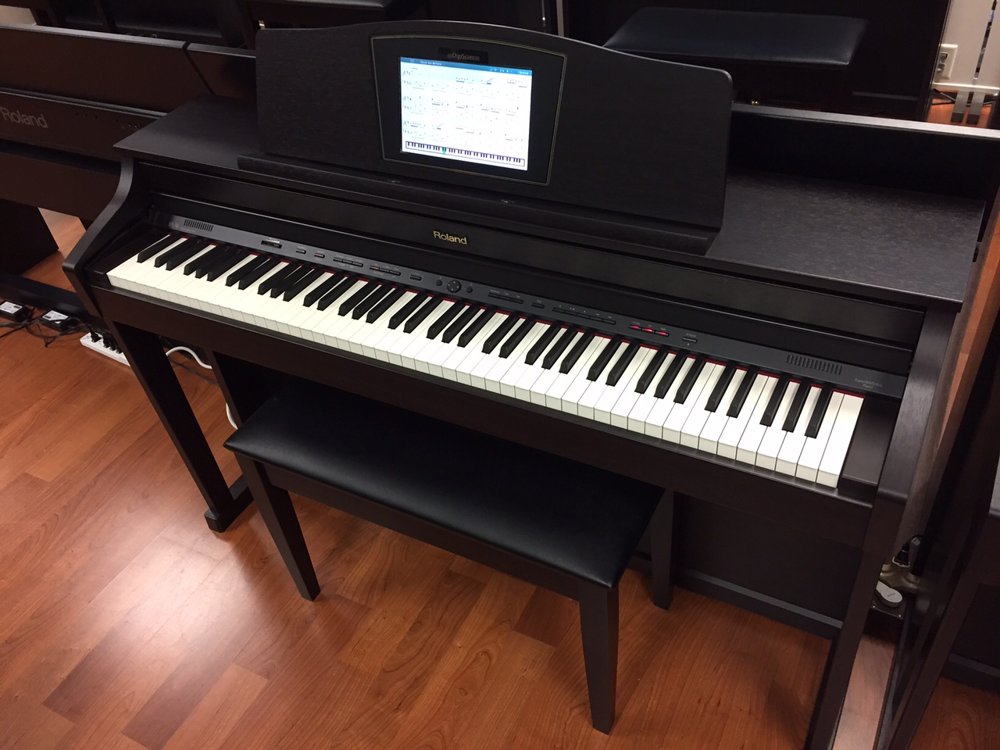

Instruments
The two instruments that I can play fluently are the paino and the cello. I've been learning the guitar and and planning to learn the flute so I can join marching band. I've been playing the piano since I was 5 years old, and mostly play classical music. Though a year ago I stopped taking lessons and I began to play music that I like to play. Currently I just play any music that seems catchy and makes sense on the piano. Most of them being songs from games I like, like The Legend of Zelda or Fire Emblem which both have good sound tracks that fit well on the piano.
I don't play the cello as much as the piano, but I have been playing since the 6th grade. I joined orchestra along with my friend and we both decided to play cello, which made getting into it very fun and made me want to continue playing it. Because I play the cello and the piano, I mostly play classical music, as that fits well with both instruments, and I like to play a song I enjoy on both instruments when I learn it. I'm not the best at cello, as I stopped playing it for a while, but recently I started to pick it up again and it is very fun. I believe that the instruments I played shaped me and I believe that music is important for everyone, and everyone should try to learn an instrument if they can.